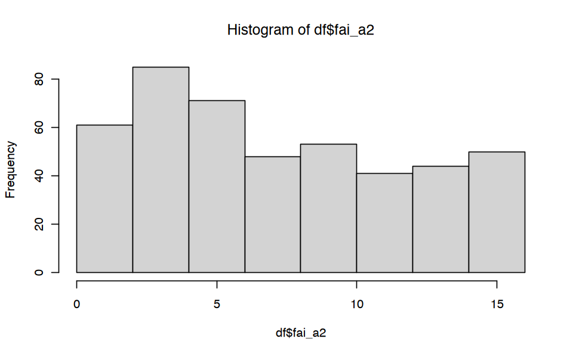

# Carica il file _common.R per impostazioni di pacchetti e opzioni
here::here("code", "_common.R") |> source()
pacman::p_load(psychometric)10 Teoria Classica dei Test
Prerequisiti
- Leggere il capitolo 2, Constructs, e il capitolo 3, Raliability, di Petersen (2024).
Concetti e Competenze Chiave
Preparazione del Notebook
10.1 Esercitazioni Assegnate
- A. Spiegare il modello di regressione lineare bivariato, spiegando sia la logica del calcolo dei coefficienti con il metodo dei minimi quadrati, sia l’interpretazione di parametri statistici come l’errore standard della regressione, la scomposizione della varianza e il calcolo del coefficiente di determinazione. Estendere quindi la discussione al modello alla regressione multipla e approfondendo l’interpretazione dei coefficienti parziali di regressione e il loro legame con i coefficienti parziali di correlazione.
- B. Spiegare i concetti principali della CTT con una simulazione.
- C. Calcolare le quantità della CTT per i dati FAI (attendibilità, SEM, stima del punteggio vero con il metodo di Kelley e relativo intervallo di fiducia).
- D. Presentare un esempio della recente letteratura psicologica in cui vengono usati (1) il SEM, e (2) la stima del punteggio vero.
- E. Presentare un esempio della recente letteratura psicologica in cui viene usato il Reliable Change Index (RCI) basato su SEM.
- F. Discutere i limiti della stima SEM della CTT.
10.2 A. Modello di Regressione Lineare
10.3 B. Teoria Classica dei Test
10.3.1 Simulazione
Simuliamo i dati in modo da riprodurre le tre assunzioni della CTT:
- \(\mathbb{E}(E) = 0\)
- \(\rho_{TE} = 0\)
- \(\rho_{E_i, E_j} = 0\)
set.seed(8394)
n <- 100
Sigma <- matrix(c(6, 0, 0, 3), byrow = TRUE, ncol = 2)
mu <- c(12, 0)
dat <- mvrnorm(n, mu, Sigma, empirical = TRUE)
T <- dat[, 1]
E <- dat[, 2]Generiamo i punteggi osservati in base alla formula fondamentale della CTT:
X <- T + EInseriamo i dati simulati in un data frame:
tibble(X, T, E) |> head()| X | T | E |
|---|---|---|
| <dbl> | <dbl> | <dbl> |
| 15.698623 | 16.765359 | -1.0667358 |
| 13.657503 | 12.248096 | 1.4094073 |
| 6.731979 | 7.852136 | -1.1201563 |
| 14.621813 | 14.233699 | 0.3881133 |
| 10.606647 | 10.187035 | 0.4196115 |
| 12.370288 | 13.329971 | -0.9596831 |
tibble(X, T) |>
ggplot(aes(T, X)) +
geom_point(position = position_jitter(w = .3, h = .3)) +
geom_abline(col = "blue")mean(T) == mean(X)
TRUE
mean(E) |> round(2)
0
c(var(T), var(X), var(E))- 6
- 9
- 3
var(T) + var(E)
9
var(X)
9
cor(E, T) |> round(2)
0
plot(density(E))
curve(dnorm(x, mean(E), sd(E)), add = TRUE, col = "red")Attendibilità:
rxx <- var(T) / var(X)
rxx
0.666666666666667
cor(T, X)^2
0.666666666666666
L’attendibilità, in maniera corrispondente, è il coefficiente di determinazione del modello lineare che spiega T in funzione di X:
fm <- lm(T ~ X)
out <- summary(fm)
out$r.squared
0.666666666666667
10.3.2 SEM
L’errore standard della misurazione
SEM <- sd(X) * sqrt(1 - rxx)
SEM |> round(3)
1.732
è identico alla deviazione standard degli errori:
sqrt(3) |> round(3)
1.732
sqrt(var(E)) |> round(3)
1.732
# Import data
df_tot <- readRDS(
here("data", "fai_2022_11_20.rds")
)
# Data wrangling
# Careless responding
# Filter for rows with FLAG == "keep" and remove the FLAG column
temp <- df_tot |>
dplyr::filter(FLAG == "keep")
temp$FLAG <- NULL
# Descriptive statistics for the items
# Compute skewness and kurtosis
items_stats <- psych::describe(temp)
# Identify items with high skewness or kurtosis (absolute values)
items_skew_kurt_bad <- rownames(items_stats)[abs(items_stats$skew) > 2.5 | abs(items_stats$kurtosis) > 7.5]
# Remove NA values from items_skew_kurt_bad
items_skew_kurt_bad <- na.omit(items_skew_kurt_bad)
# Select columns excluding the problematic items
df_clean <- temp %>%
dplyr::select(-dplyr::all_of(items_skew_kurt_bad))
# Check the number of removed items (columns)
num_removed <- ncol(temp) - ncol(df_clean)
cat("Number of items removed:", num_removed)
# Use only 4 items
df <- df_clean %>%
dplyr::select("FAI_129", "FAI_133", "FAI_25", "FAI_103")
df$fai_a2 <- df$FAI_129 + df$FAI_133 + df$FAI_25 + df$FAI_103Number of items removed: 27hist(df$fai_a2)
Metodi per stimare l’attendibilità: test paralleli, test-retest, split-half, consistenza interna.
df[, 1:4] |> psych::alpha()
Reliability analysis
Call: psych::alpha(x = df[, 1:4])
raw_alpha std.alpha G6(smc) average_r S/N ase mean sd median_r
0.82 0.82 0.79 0.54 4.7 0.013 1.9 1.2 0.53
95% confidence boundaries
lower alpha upper
Feldt 0.79 0.82 0.85
Duhachek 0.80 0.82 0.85
Reliability if an item is dropped:
raw_alpha std.alpha G6(smc) average_r S/N alpha se var.r
FAI_129 0.74 0.74 0.67 0.49 2.9 0.021 0.0073
FAI_133 0.76 0.76 0.69 0.51 3.1 0.020 0.0095
FAI_25 0.77 0.77 0.71 0.53 3.3 0.019 0.0184
FAI_103 0.83 0.84 0.78 0.63 5.2 0.013 0.0021
med.r
FAI_129 0.45
FAI_133 0.46
FAI_25 0.46
FAI_103 0.62
Item statistics
n raw.r std.r r.cor r.drop mean sd
FAI_129 453 0.86 0.85 0.81 0.73 2.1 1.4
FAI_133 453 0.85 0.84 0.77 0.69 1.6 1.6
FAI_25 453 0.81 0.82 0.74 0.67 2.4 1.3
FAI_103 453 0.72 0.72 0.56 0.52 1.6 1.4
Non missing response frequency for each item
0 1 2 3 4 miss
FAI_129 0.13 0.33 0.13 0.16 0.25 0
FAI_133 0.36 0.24 0.07 0.09 0.25 0
FAI_25 0.06 0.24 0.23 0.20 0.28 0
FAI_103 0.23 0.37 0.11 0.11 0.18 0rxx <- 0.82
sd(df$fai_a2) * sqrt(1 - rxx)
1.96673725789664
plot(density(df$fai_a2))10.3.3 Stima del Punteggio Vero
\(\hat{T} = \bar{X} + r_{xx} (X - \bar{X})\)
Consideriemo il punteggio di 10 sulla sottoscale FAI-2. La stima del punteggio vero diventa:
mean(df$fai_a2) + 0.82 * (10 - mean(df$fai_a2))
9.58794701986755
\(\sigma_{\hat{T}} = \sigma_X\sqrt{r_{xx'}(1 - r_{xx'})}\)
Calcoliamo l’errore standard della stima del punteggio vero:
sd(df$fai_a2) * sqrt(0.82 * (1 - 0.82))
1.78095633357783
?CI.tscoreCI.tscore package:psychometric R Documentation
_C_o_n_f_i_d_e_n_c_e _I_n_t_e_r_v_a_l_s _f_o_r _T_e_s_t _S_c_o_r_e_s
_D_e_s_c_r_i_p_t_i_o_n:
Computes the CI for a desired level for observed scores and
estimated true scores
_U_s_a_g_e:
CI.tscore(obs, mx, s, rxx, level = 0.95)
CI.obs(obs, s, rxx, level = 0.95)
_A_r_g_u_m_e_n_t_s:
obs: Observed test score on test x
mx: mean of test x
s: standard deviation of test x
rxx: reliability of test x
level: Significance Level for constructing the CI, default is .95
_D_e_t_a_i_l_s:
'CI.tscore' makes use of 'Est.true' to correct the observed score
for regression to the mean and 'SE.Est' for the correct standard
error. 'CI.tscore' also requires entry of the mean of the test
scores for correcting for regression to the mean.
'CI.obs' is much simpler in construction as it only makes use of
the observed score without any corrections. 'CI.obs' uses
'SE.Meas', the SEM that appears in most test manuals and text
books.
_V_a_l_u_e:
Both functions return a table with 4 elements
SE.: Standard Error of the Estimate or SE of Measurement
LCL: lower confidence limit of the CIDescription of 'comp2'
T.Score: (or OBS) Estimate True Score or Observed score
UCL: upper confidence limit of the CI
_W_a_r_n_i_n_g:
Be Cautious in construction and interpretation of CIs
To obtain percent for 1 SEM
1-((1-pnorm(1))*2)
To obtain percent for 2 SEM
1-((1-pnorm(2))*2)
95 percent CI corresponds to 1.96 * SE
1 * SE corresponds to .6827
2 * SE corresponds to 0.9772499
so, for two-sided, 2 * SE corresponds to 0.9544997
_N_o_t_e:
It is not in error to report any one of these. The
misinterpretation is in taking the observed score and making
inferences about the true score without (1) using the correct
standard error and (2) correcting for regression toward the mean
of the observed scores.
_A_u_t_h_o_r(_s):
Thomas D. Fletcher <mailto:t.d.fletcher05@gmail.com>
_R_e_f_e_r_e_n_c_e_s:
Dudek, F. J. (1979). The continuing misinterpretation of the
standard error of measurement. _Psychological Bulletin, 86_,
335-337.
_S_e_e _A_l_s_o:
'SE.Meas'
_E_x_a_m_p_l_e_s:
# Examples from Dudek (1979)
# Suppose a test has mean = 500, SD = 100 rxx = .9
# If an individual scores 700 on the test
CI.tscore (700, 500, 100, .9, level=.68)
CI.obs(700, 100,.9, level=.68)
CI.tscore(10, mean(df$fai_a2), sd(df$fai_a2), 0.82, level = 0.95)| SE.Est | LCL | T.Score | UCL |
|---|---|---|---|
| <dbl> | <dbl> | <dbl> | <dbl> |
| 1.780956 | 6.097337 | 9.587947 | 13.07856 |
10.4 Session Info
sessionInfo()R version 4.4.1 (2024-06-14)
Platform: aarch64-apple-darwin20
Running under: macOS 15.0.1
Matrix products: default
BLAS: /Library/Frameworks/R.framework/Versions/4.4-arm64/Resources/lib/libRblas.0.dylib
LAPACK: /Library/Frameworks/R.framework/Versions/4.4-arm64/Resources/lib/libRlapack.dylib; LAPACK version 3.12.0
locale:
[1] C
time zone: Europe/Rome
tzcode source: internal
attached base packages:
[1] stats graphics grDevices utils datasets methods
[7] base
other attached packages:
[1] lavaanExtra_0.2.1 lavaanPlot_0.8.1 kableExtra_1.4.0
[4] corrplot_0.94 nortest_1.0-4 MASS_7.3-61
[7] ggokabeito_0.1.0 viridis_0.6.5 viridisLite_0.4.2
[10] ggpubr_0.6.0 ggExtra_0.10.1 gridExtra_2.3
[13] patchwork_1.3.0 bayesplot_1.11.1 semTools_0.5-6
[16] semPlot_1.1.6 lavaan_0.6-19 psych_2.4.6.26
[19] scales_1.3.0 markdown_1.13 knitr_1.48
[22] lubridate_1.9.3 forcats_1.0.0 stringr_1.5.1
[25] dplyr_1.1.4 purrr_1.0.2 readr_2.1.5
[28] tidyr_1.3.1 tibble_3.2.1 ggplot2_3.5.1
[31] tidyverse_2.0.0 here_1.0.1
loaded via a namespace (and not attached):
[1] RColorBrewer_1.1-3 rstudioapi_0.16.0 jsonlite_1.8.9
[4] magrittr_2.0.3 TH.data_1.1-2 estimability_1.5.1
[7] farver_2.1.2 nloptr_2.1.1 rmarkdown_2.28
[10] vctrs_0.6.5 Cairo_1.6-2 minqa_1.2.8
[13] base64enc_0.1-3 rstatix_0.7.2 htmltools_0.5.8.1
[16] broom_1.0.7 Formula_1.2-5 htmlwidgets_1.6.4
[19] plyr_1.8.9 sandwich_3.1-1 emmeans_1.10.4
[22] zoo_1.8-12 uuid_1.2-1 igraph_2.0.3
[25] mime_0.12 lifecycle_1.0.4 pkgconfig_2.0.3
[28] Matrix_1.7-0 R6_2.5.1 fastmap_1.2.0
[31] shiny_1.9.1 numDeriv_2016.8-1.1 digest_0.6.37
[34] OpenMx_2.21.12 fdrtool_1.2.18 colorspace_2.1-1
[37] rprojroot_2.0.4 Hmisc_5.1-3 labeling_0.4.3
[40] fansi_1.0.6 timechange_0.3.0 abind_1.4-8
[43] compiler_4.4.1 withr_3.0.1 glasso_1.11
[46] htmlTable_2.4.3 backports_1.5.0 carData_3.0-5
[49] ggsignif_0.6.4 corpcor_1.6.10 gtools_3.9.5
[52] tools_4.4.1 pbivnorm_0.6.0 foreign_0.8-87
[55] zip_2.3.1 httpuv_1.6.15 nnet_7.3-19
[58] glue_1.8.0 quadprog_1.5-8 DiagrammeR_1.0.11
[61] promises_1.3.0 nlme_3.1-166 lisrelToR_0.3
[64] grid_4.4.1 pbdZMQ_0.3-13 checkmate_2.3.2
[67] cluster_2.1.6 reshape2_1.4.4 generics_0.1.3
[70] gtable_0.3.5 tzdb_0.4.0 data.table_1.16.0
[73] hms_1.1.3 xml2_1.3.6 car_3.1-3
[76] utf8_1.2.4 sem_3.1-16 pillar_1.9.0
[79] IRdisplay_1.1 rockchalk_1.8.157 later_1.3.2
[82] splines_4.4.1 lattice_0.22-6 survival_3.7-0
[85] kutils_1.73 tidyselect_1.2.1 miniUI_0.1.1.1
[88] pbapply_1.7-2 svglite_2.1.3 stats4_4.4.1
[91] xfun_0.48 qgraph_1.9.8 arm_1.14-4
[94] visNetwork_2.1.2 stringi_1.8.4 pacman_0.5.1
[97] boot_1.3-31 evaluate_1.0.0 codetools_0.2-20
[100] mi_1.1 cli_3.6.3 RcppParallel_5.1.9
[103] IRkernel_1.3.2 rpart_4.1.23 systemfonts_1.1.0
[106] xtable_1.8-4 repr_1.1.7 munsell_0.5.1
[109] Rcpp_1.0.13 coda_0.19-4.1 png_0.1-8
[112] XML_3.99-0.17 parallel_4.4.1 jpeg_0.1-10
[115] lme4_1.1-35.5 mvtnorm_1.3-1 openxlsx_4.2.7.1
[118] crayon_1.5.3 rlang_1.1.4 multcomp_1.4-26
[121] mnormt_2.1.1